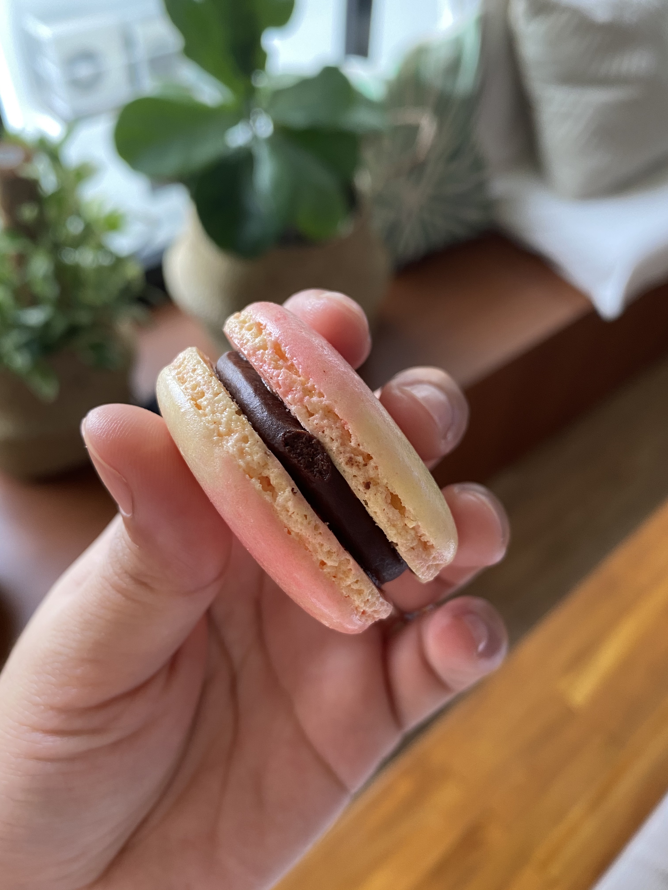

Macaron Recipe

Description
Learn how to make the challenging French Macarons
Ingredients
- 100g eggwhite
- 100g caster sugar
- 1/4 tsp cream of tartar
- 125g confectioner's sugar
- 140g fine almond flour
Steps
- Preheat oven to 120C. Line baking sheet with parchment paper.
Prepare piping bags with a rounded tip. Make sure mixing bowls
and utensils are clean without any oily residue.
- Combine almond flour and confectioner's sugar in a food processor
and pulse 5-8 times. Sift into a large bowl.
- Make the Meringue: In a clean large bowl, whisk the eggwhites and cream of tartar
until white and frothy. Add the caster sugar one tablespoon at a time until sharp
peaks form. This will take about 10-15 minutes of whisking time.
- Take one third of the meringue and fold it into the dry ingredients using a spatula.
It's okay to have dry spots and lumps at this point. Do not worry about deflating
the meringue.
- Add the next third of the meringue and fold it into the batter.
Stop when there are no dry spots at this point. Then add the last third
of the meringue, this time, carefully try not to deflate the batter.
- Once everything is incorporated, start the macronage gently.
Fold the batter over itself while turning the bowl at every turn.
Stop the macronage once the batter can form ribbons with a sharp edge
when dropped from the spatula.
- Transfer the batter to the prepared piping bag and pipe 1.5 cm circles
using a template. Tap the bottom of the pan to release bubbles in the batter.
You can also bang the pan on the counter 2-3 times. Poke the bubbles with a toothpick.
- Place the baking tray in the oven with the door slightly open for 3 minutes
to make the macarons form a skin on top. This will help avoid cracking.
- Close the oven door and increase the temperature to 140C and bake for 15-18 minutes.
- Remove from the oven and cool completely before adding any fillings.
Our favorite fillings are chocolate ganache and salted caramel.
- Store the filled macaron in an airtight conatiner in the refrigirator
for 24 hours to let it mature before serving.
- Serve at room temperature and enjoy!
Go to Homepage